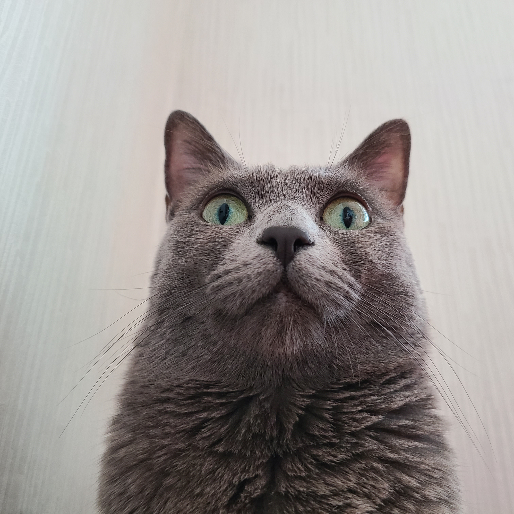

#러시안블루 #공주님
안녕, 난 레이 야!
우리 집의 최고 귀염둥이, 위풍당당한 냥냥이 레이를 소개합니다. 초록빛 보석 같은 눈망울과 부드러운 회색 털옷을 입은 우아한 숙녀랍니다.
Name
레이 (Lay)
Age
9살
Gender
여아 (Female)
Personality
조용한 애교쟁이
레이의 매력 포인트
깊은 에메랄드 눈빛
9년의 묘생이 담긴 투명하고 깊은 초록빛 눈동자가 매력적이에요. 조용히 바라볼 때면 마음이 편안해진답니다.
우아한 벨벳 털옷
러시안 블루 특유의 은빛 도는 회색 털을 가졌어요. 쓰다듬으면 고급 벨벳처럼 부드러워 레이도, 집사도 힐링되는 시간이에요.
얌전한 애교쟁이
우다다 뛰어다니기보단 조용히 다가와 옆에 웅크리는 걸 좋아해요. 조심스럽게 머리를 비비며 내는 작은 골골송은 최고의 선물이죠.
레이의 일상 기록


레이에게 간식을 줄까요?
츄르를 주면 기분이 좋아져요!
레이에게 한마디
최대 100자까지 작성 가능합니다.